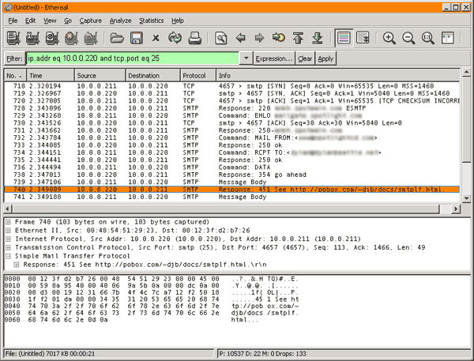

Dylan Beattie, July 2005
After upgrading our web server from Windows 2000 Server to Windows 2003 Server, we found that a small number of customers were no longer receiving any e-mail from our site. For each failed message, the Windows Event Log contained the following event:
Source | smtpsvc |
|---|---|
Category | none |
Event ID | 4006 |
Description |
Message delivery to the host 'xxx.xxx.xxx.xxx' failed while delivering to the remote domain 'dylanbeattie.net' for the following reason: The connection was dropped by the remote host. |
Our site is written in JScript ASP, and we're using the CDO libraries to send e-mail messages via an SMTP pickup directory. Manually sending SMTP test messages works fine; smtpdiag.exe doesn't find any problems, DNS is working correctly, and the problem only affects a handful of customers; everyone else can still receive mail as usual.
Internet e-mail standards forbid the presence of bare linefeed characters in e-mail messages. See http://cr.yp.to/docs/smtplf.html for more information.
There are several places in our website code where we send e-mail messages which include bare linefeed characters (ie. we've used \n in the message text, instead of \r\n)
The SMTP service in IIS 5, which is included with Windows 2000, silently rewrites these linefeed characters. IIS 6, which is part of Windows Server 2003, doesn't rewrite them - it will happily send a bare linefeed character as part of an outgoing e-mail message. Some external e-mail systems will quite happily accept these badly-formed messages, but other systems, including the excellent qmail server, will refuse to accept these messages. Unfortunately, this causes bizarre behaviour in the IIS SMTP server.
In a perfect world, IIS would record the actual response from the remote server in the Windows event log - so, if it had tried (and failed) to send to a qmail server, your event description would be "Message delivery to the host 1.2.3.4 failed while delivering to the remote domain dylanbeattie.net for the following reason: 451: See http://pobox.com/~djb/docs/smtplf.html." Then IIS would move the malformed message into the Badmail folder, and move onto the next one.
What it actually does is to stop delivering any mail to the domain that caused the problem. Even if subsequent mails don't contain the offending bare linefeed characters, IIS will not attempt to deliver them. Furthermore, restarting the SMTP service doesn't help, because when IIS tries to process the messages that are already in the queue, the first thing it finds is the message containing the bare linefeed, which causes it to flip out again, etc.
The only way to restore normal mail to the affected domain is to stop the SMTP service, locate the offending message, manually remove it from the Queue folder, and then start the SMTP service again.
Make sure your website code isn't trying to send e-mail messages containing bare linefeeds. In our case, I found a few places where we were doing this sort of thing:
var cdoMessage = Server.CreateObject("CDO.Message");
cdoMessage.Configuration = Application("cdoConfiguration");
cdoMessage.From = "My Web Server <www@mydomain.com>";
cdoMessage.To = "someone@dylanbeattie.not";
cdoMessage.Subject = "Your Online Order Receipt ";
cdoMessage.TextBody = "Dear Dylan,\nThankyou for ordering from mydomain.com\n\nYour order details are attached.\n\nKind regards\n\nMydomain.com.";
cdoMessage.Send();
Replacing the bare \n's with \r\n (carriage-return, line-feed) appears to have solved the problem.
Tracking down this particular bug required a whole bunch of tricks and tinkering, so for anyone who's interested, here's how I went about finding and fixing the problem.
First, the usual DNS and connectivity checks. Find a computer which accepts internet e-mail for dylanbeattie.net. We can check this using the nslookup tool, to find something called an MX record for a particular domain. The bits you type are in red, the server responses are in blue.
C:\>nslookup
Default Server: dns1.mydomain.com
Address: 192.168.0.1
> set type=MX > dylanbeattie.net Server: dns1.mydomain.com Address: 192.168.0.1
dylanbeattie.net MX preference = 10, mail exchanger = mail.dylanbeattie.net
mail.dylanbeattie.net internet address = 123.123.123.123
>exit
What this means is that, to send mail to people at dylanbeattie.net, we need to connect to the computer called mail.dylanbeattie.net, which we can find at the IP address 123.123.123.123.
If you see something like "dns1.mydomain.com can't find dylanbeattie.net: Non-existent domain" it means you're probably trying to send to a fake e-mail address, or an old address which is no longer valid. If you don't get a Default Server: message, it means that you haven't set up DNS properly on your web server.
For simple tests like this, you can actually send e-mail by connecting manually, using the telnet program, and typing the mail commands yourself. This lets you follow exactly what's going on at every stage of the 'conversation'. The "25" on the end of the telnet command means to connect using port 25 (the standard port for SMTP e-mail connections). Again, the bits you type are in red, the server responses are in blue.
C:\>telnet mail.dylanbeattie.net 25 220 mail.dylanbeattie.net ESMTP
EHLO www.mydomain.com
250-mail.dylanbeattie.net
250-PIPELINING
250 8BITMIME
MAIL FROM:<www@mydomain.com>
250 ok
RCPT TO:<somebody@dylanbeattie.net>
250 ok
DATA
354 go ahead
From: "Web Server" <www@mydomain.com>
Sender: "Web Server" <www@mydomain.com>
To: <somebody@dylanbeattie.net>
Subject: Test message
This is a test e-mail message. . 250 ok 1121333197 qp 28184 QUIT 221 ankh.spotmain.com
OK, so now we know that we can send some mail to dylanbeattie.net without problems, which indicates that the problem isn't anything to do with the server or the network, it's to do with particular e-mail messages (or the circumstances in which they're sent). Time to do some digging.
Next thing I did was to install Ethereal WireShark and the WinPCap capture driver on our server. Ethereal is a network protocol analyser - it'll gather, dissect and analyse the sequences of commands and responses that make up a network session. WinPCap is a driver that allows Ethereal to capture the actual network traffic going to/from your server, so you can see what's going on in real time.
What I basically did here was to
Here's the result of the offending trace:

The clue here is the line (highlighted in orange). We've just sent the contents of our message ("Message Body"). We're expecting the remote server to say "250 OK" which means it's accepted our message and will now scuttle off and deliver it. What we've got in this case is the code 451 (meaning "Requested action aborted: local error in processing", according to RFC2821, the document which defines the SMTP mail protocol.) Fortunately, the remote server here is running qmail, which has helpfully included a link to an explanatory page - and probably saved us a lot of tedious digging around and debugging in the process.
Documentation copyright © Dylan Beattie 2005 except where indicated.
Permission is granted to copy, distribute and/or modify this documentation under the terms of the GNU Free Documentation License, Version 1.1 or any later version published by the Free Software Foundation; with no Invariant Sections, no Front-Cover Texts and no Back-Cover Texts.